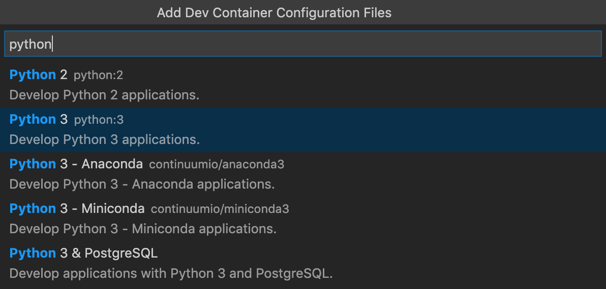

Configure separate containers
While development containers often are tied to a single folder, repository, or project, they can also be used with multiple folders as a way to simplify setup or separate your tools. Imagine you had your source code across multiple repositories in a single folder for a given toolset.
For example:
üìÅ Repos
üìÅ node
üìÅ python
üìÅ starter-snake-python
üìÅ vscode-remote-try-python
üìÅ your-python-project-here
üìÅ go
üìÅ dotnet
Let's set up a container for use with all of the Python projects in the ./Repos/python folder.
-
Start Visual Studio Code, select Dev Containers: Open Folder in Container... from the Command Palette (F1) or quick actions Status bar item, and select the
./Repos/pythonfolder.
Tip: If you want to edit the container's contents or settings before opening the folder, you can run Dev Containers: Add Dev Container Configuration Files... instead.
-
Now pick a starting point for your dev container. You can either select a base dev container definition from a filterable list, or use an existing Dockerfile or Docker Compose file if one exists in the folder you selected.
Note: When using Alpine Linux containers, some extensions may not work due to
glibcdependencies in native code inside the extension.
The list will be automatically sorted based on the contents of the folder you open. The dev container Templates displayed come from our first-party and community index, which is part of the Dev Container Specification. We host a set of Templates as part of the spec in the devcontainers/templates repository. You can browse the
srcfolder of that repository to see the contents of each Template. -
After picking the starting point for your container, VS Code will add the dev container configuration files to the
./Repos/python/.devcontainerfolder. -
The VS Code window will reload and start building the dev container. A progress notification provides status updates. You only have to build a dev container the first time you open it; opening the folder after the first successful build will be much quicker.

-
After the build completes, VS Code will automatically connect to the container. Once connected use File > Open... / Open Folder... to select one of the folders under
./Repos/python.
-
In a moment, VS Code will open the folder inside the same container. In the future, you can use the Remote Explorer in the Activity Bar to open this sub-folder in the container directly.

Tip: Instead of mounting the local filesystem, you can use a similar flow to set up a container with an isolated, more performant volume that you clone your source code into. See the Advanced Containers Improve disk performance article for details.